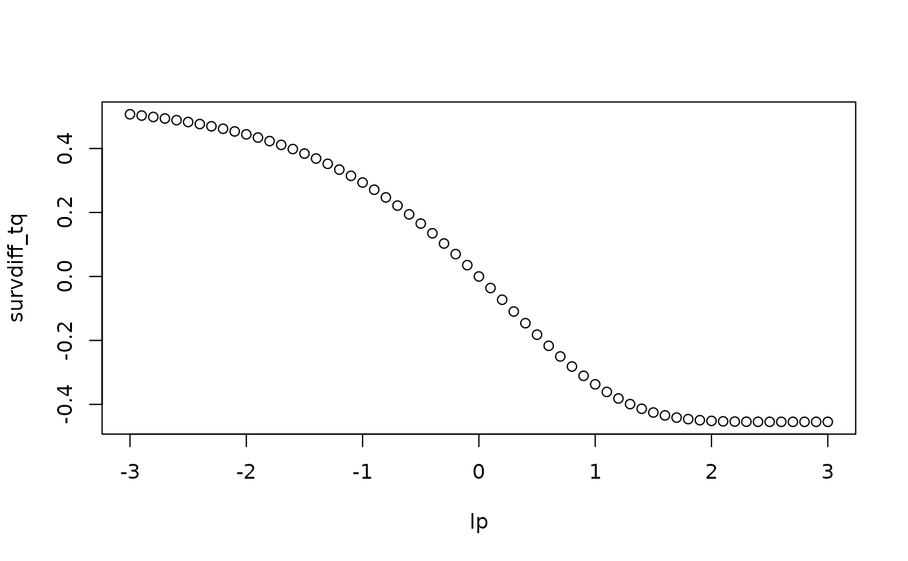

Calculates the difference in survival probability at a given quantile time across a range of prognostic index values. Useful for understanding how different log hazard ratios affect survival outcomes.
Arguments
- q
Numeric scalar. Survival quantile of interest (default 0.5, i.e. median survival).
- pi
Numeric vector. Prognostic index values to evaluate. Must be finite.
- mu
Numeric scalar. Intercept parameter. Must be finite.
- shape
Numeric scalar or vector. Shape parameter(s) for the Weibull model. Must be finite and strictly positive.
- type
Character string. Model type:
"weibull"or"ms".- times
Numeric vector. Output time grid; see the "Time grid and event-time resolution" and "M-spline hazard carry convention" sections of
sim_ttefor the exact contract. For M-spline models this must also be the time points corresponding to the rows ofbasehaz. If missing, defaults toseq(0, end_time, by = 1).- basehaz
Numeric matrix. Baseline hazard (M-spline models), one row per element of
times. Must be finite and non-negative; seesim_tte's "M-spline hazard carry convention" for how it is interpreted between supplied times.- end_time
Numeric scalar. Administrative censoring time. See the
end_timecontract documented insim_tte(including the M-splinemin(times) <= end_time <= max(times)requirement).- ...
Additional arguments passed to
mrgsim.tgrid,obsonly,nocb,carry_out/carry.out, anddatacannot be overridden; seesim_tte.
See also
sim_tte, the closed-form engine this function
diagnoses, and the function to call once you have picked pi,
mu and shape; sim_tte_df, for the
underlying trajectory-to-event mechanism.
Examples
# Small fast example
data_sim <- explore_pi_tq_surv(
pi = seq(-1, 1, by = 0.5),
mu = -1,
shape = 1.1,
end_time = 10,
type = "weibull"
)
#> Loading model from cache.
head(data_sim)
#> ID time basehaz_id lp mu shape p11 p11_baseline survdiff_tq
#> 1 1 2 1 -1.0 -1 1.1 0.7481906 0.4544957 0.2936949
#> 2 2 2 1 -0.5 -1 1.1 0.6198424 0.4544957 0.1653467
#> 3 3 2 1 0.0 -1 1.1 0.4544957 0.4544957 0.0000000
#> 4 4 2 1 0.5 -1 1.1 0.2724972 0.4544957 -0.1819985
#> 5 5 2 1 1.0 -1 1.1 0.1172383 0.4544957 -0.3372574
# \donttest{
# Larger range example
data_sim2 <- explore_pi_tq_surv(
pi = seq(-3, 3, by = 0.1),
mu = -1,
shape = 1.1,
end_time = 200,
type = "weibull"
)
#> Loading model from cache.
plot(survdiff_tq ~ lp, data = data_sim2)

# }